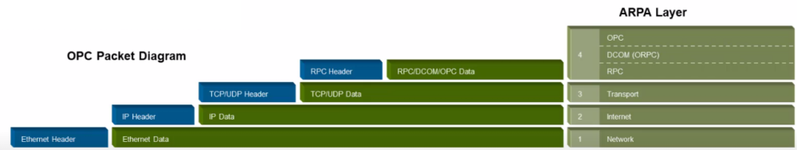
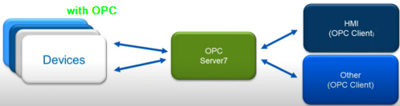

OPC
OPC
The OPC Foundation – The interoperability Standard for Industrial Automation
•
Classic OPC was originally developed in 1996 based on Microsoft products OLE, COM, and DCOM.
•
OPC .NET 4.0 provides .NET interface to “Classic Servers”
◇ increased security – authentication, authorization, data encryption and two ports opened for communication
•
OPC Unified Architecture (UA) is based on open standards such as SOAP/XML over HTTP, UA TCP.
OPC is so popular because is easily to maintain and allow communication between devices and HMI very easily without the need of loading a new driver when adding a new device
Bibliography:
•
www.opcfoundation.org